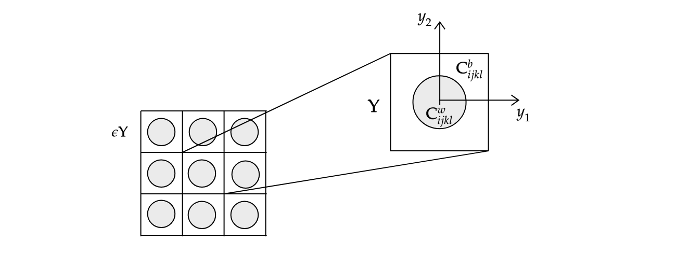

Mathematical Modelling on Cortical Bone
Jean-Gabriel Minonzio, & Reidmen Arostica B.
FCFM, U. de Chile - October, 2018.
Microstructure
The defining structure in the sense of mechanical behavior is the so-called Mesoscale.
Mesoscale
The main components preponderant to the mechanical behaviour are defined by the size, between $40-60 [\mu m]$.
- Haversian Canals
- Resorption Cavities
Observed mesoscale microstructure


Hypothesis and Scale Separation
- For each point $\mathbf{x} \in \Omega$ of the domain, let us consider a fast variable $y = \epsilon^{-1} x \in \mathbf{Y}$ where $\mathbf{Y}:= (0,1)^n$ where $n \in {2,3}$ denotes the microstructure domain.
- The elements of the elastic tensor, are oscillatory in the form $C_{ijkl}\big(\frac{\mathbf{x}}{\epsilon}\big) \in L^2 (\mathbf{Y})$, so $\mathbf{Y}-periodic$.

Idealization of the periodic domain microstructure following a square microstructure.
Formally, our PDE problem becomes:
Find $u(\mathbf{x},t) \in \Omega_T$ being $\Omega$ domain, with $\partial \Omega = \Gamma_D \cup \Gamma_N$ regular enough, solution to:
\[ \begin{aligned} \rho\big(\frac{\mathbf{x}}{\epsilon}\big) \partial_{tt} u - \nabla \cdot \sigma(u) &= \mathbf{0} & \text{ in } \Omega_T \\ \sigma(u) & = \mathbf{C}\big(\frac{\mathbf{x}}{\epsilon}\big): \mathbf{e}(u) & \text{ in } \Omega_T \\ u & = \mathbf{0} & \text{ in } \Gamma_D \times [0, T]\\ \sigma(u) \cdot n & = \mathbf{F}(\mathbf{x},t) & \text{ in } \Gamma_N \times [0,T] \end{aligned} \]The Asymptotic
- We seek a asymptotic solutions describing the behaviour at different orders (omitting $t$), by \[ \begin{aligned} u(\mathbf{x}, \epsilon) & = \sum_{a=0}^{\infty} \epsilon^{a} u^{(a)}\big(\frac{\mathbf{x}}{\epsilon}\big) \\ &= u^{(0)}\big(x, \frac{\mathbf{x}}{\epsilon}\big) + \epsilon^{1} u^{(1)}\big(\frac{\mathbf{x}}{\epsilon}\big) + \epsilon^{2} u^{(2)}\big(\frac{\mathbf{x}}{\epsilon}\big) + r(\mathbf{x}, \epsilon) \end{aligned} \]
- Naturally, we would like $\epsilon \rightarrow 0$, the convergence to an effective model and estimations of the error.
The homogenized (effective) model is then obtained after reagruping the terms at order $\mathcal{O}(1)$:
\[ \begin{aligned} \langle \rho\rangle_{\mathbf{Y}} \partial_{tt} v_i - \partial_{x_j} \big[ C^{hom}_{ijrs} \mathbf{e}_{rs,x}(v)\big] = \mathbf{0} & \text{ in } (0,T)\times \Omega \\ \sigma^{hom}(v) \cdot n = \mathbf{F} &\text{ in } (0,T)\times \Gamma_N \\ v = \mathbf{0} & \text{ in } (0,T)\times \Gamma_D \\ \partial_t v(0) = v(0) = \mathbf{0} & \text{ in } \Omega \end{aligned} \] being $C_{ijrs}(p) := \langle C_{ijrs}(\mathbf{y}) + C_{ijkl}(\mathbf{y}) \mathbf{e}_{kl,y}\big(\mathbf{N}^{rs}(\mathbf{y})\big) \rangle_{\mathbf{Y}}$.
In particual, the cell problems which define the homogenized coefficients are then expressed as $N^{rs}(\mathbf{y})$ $\mathbf{Y}$-periodic solutions to the equation \[ \begin{equation*} \partial_{y_j}\big[ C_{ijkl}(\mathbf{y}) \mathbf{e}_{kl,y}\big( N^{rs} (\mathbf{y})\big) \big] = - \partial_{y_j} \big[ C_{ijkl}(\mathbf{y}) \big] \end{equation*} \]
Supplemented with condition $\langle N^{rs} \rangle_{\mathbf{Y}} = \mathbf{0}$
Numerical objetives proposed using Python
- Simulate the guided wave in a 2D domain an elastodynamic model, obtaining the Lamb Waves associated, so that it can be validated statistically by simulations the experimental device in Foiret et al. 2014
- Solve numerically by using the Finite Element Method the so-called cell problems associated to the two-scale approximation in the homogenization procedure comparing it with the standard solutions from Parnell and Grimal.
- Also by applying Finite Element Method in Python, solve the cell problems now associate to a viscoelastic homogenized model and obtain the so-called $Q_{ij}$ factors proposed in Bernand et al. 2015
First, taking into account a 2D square model as microstructure for mesoscale
The choice of periodic geometry shows similar results to the curves obtained in Parnell et al. 2008.
Solution are obtained using FEniCS library in Python at different mesh sizes. For example, in the case of a 2D square.

Diagonal coefficients of the simulated homogenized elastic tensor.

The Non-diagonal coefficients of the homogenized elastic tensor.
Now, taking into account a Hexagonal model as microstructure for mesoscale

Diagonal coefficients of the simulated homogenized elastic tensor.

Diagonal coefficients of the simulated homogenized elastic tensor.
Our main problem is related in both cases to the behavior of the $C_{66}$ coeff.
The main reason is related tothe different boundary conditions possible to impose in the cell problem.
Considering now a viscoelastic behavior associated to the bone, we model the governing mechanical system of Kelvin-Voigt type:
\[ \begin{aligned} \rho^{\epsilon} \partial_{tt} u^{\epsilon} - \nabla \cdot \sigma(u, \partial_t u) &= \mathbf{0} & \text{ in } \Omega \\ \sigma (u, \partial_t u) \cdot n &= C(\frac{\mathbf{x}}{\epsilon}) : \mathbf{e}(u) + D(\frac{\mathbf{x}}{\epsilon}):\mathbf{e}(\partial_t u) & \text{ in } \Omega \\ \sigma(u, \partial u) \cdot n &= \mathbf{F} &\text{ in } \Gamma_N \\ u &= \mathbf{0} & \text{ in } \Gamma_D \\ \end{aligned} \]
Since Bernard et al. did the study in the frequency domain, we consider the tranformation of the Kelvin-Voigt model using the Fourier transform.
So, for fixed $\omega$ we consider the following PDE system:
\[ \begin{aligned} -\langle \rho\rangle_{\mathbf{Y}} \omega^2 \hat{v} - \nabla \cdot \hat{\sigma}(\hat{v}) &= \mathbf{0} & \text{ in } \Omega \\ \hat{\sigma}_{ij}(\hat{v})n_j &= (C_{ijkl}(\frac{\mathbf{x}}{\epsilon}) + \mathbf{i}\omega D_{ijkl}(\frac{\mathbf{x}}{\epsilon}))\mathbf{e}_{kl}(\hat{v}) & \text{ in } \Omega \\ \hat{\sigma}(\hat{v}) \cdot n &= \hat{\mathbf{F}} &\text{ in } \Gamma_N \\ \hat{v} &= \mathbf{0} & \text{ in } \Gamma_D \\ \end{aligned} \]
Now, by a similar procedure it's possible to obtain at a fixed frequency $\omega$, the governing viscoelastic (homogenized) behavior given by:
\[ \begin{aligned} -\langle \rho\rangle_{\mathbf{Y}} \, \omega^2 \hat{v} - \nabla \cdot \hat{\sigma}(\hat{v}) = \mathbf{0} & \text{ in } \Omega \\ \hat{\sigma}_{ij}(\hat{v})n_j = (C^{hom}_{ijkl} + \mathbf{i}\omega D_{ijkl}^{hom})\mathbf{e}_{kl}(\hat{v}) & \text{ in } \Omega \\ \hat{\sigma}(\hat{v}) \cdot n = \hat{\mathbf{F}} &\text{ in } \Gamma_N \\ \hat{v} = \mathbf{0} & \text{ in } \Gamma_D \\ \end{aligned} \]
In particular, the cell problems are then expressed as complex vector valued functions $N^{rs}(\mathbf{y})$ $\mathbf{Y}$-periodic solutions to the equation
\[ \begin{equation*} -\partial_{y_j}\big[ \big(C_{ijkl}+ \mathbf{i}\omega D_{ijkl}\big) \mathbf{e}_{kl,y}\big( N^{rs}\big) \big] = \partial_{y_j} \big[ C_{ijrs} + \mathbf{i}\omega D_{ijrs}\big] \end{equation*} \]
Supplemented with condition $\langle N^{rs} \rangle_{\mathbf{Y}} = \mathbf{0}$, i.e. of average zero at $\mathbf{Y}$.
Decomposing the solution as it's real and imaginary part, $N^{rs} = N_R^{rs} + i N_I^{rs}$ it follows then:
\[ \begin{aligned} C^{hom}_{ijrs} &= \langle C_{ijrs} + C_{ijkl} \mathbf{e}_{kl}(N^{rs}_R) -\omega D_{ijkl} \mathbf{e}_{kl}(N^{rs}_I) \rangle \\ D^{hom}_{ijrs} &= \langle \omega D_{ijrs} + C_{ijkl} \mathbf{e}_{kl}(N^{rs}_I) +\omega D_{ijkl} \mathbf{e}_{kl}(N^{rs}_R) \rangle \end{aligned} \]
Then following the literature of Bernard et. al. 2015, we define the $Q$-factor in Voigt notation as $Q_{ij}^{-1} = \frac{C^{hom}_{ij}}{D^{hom}_{ij}}$.
The experimental results obtained from Bernard, show the results:


We simulated with a viscous component of the form $D_{ijkl}(\mathbf{y}) = \epsilon^w C^w_{ijkl}(\mathbf{y}) + \epsilon^b C^b_{ijkl}(\mathbf{y})$ being $\epsilon^b = 5 \times 10^{-2}$ and $\epsilon^w = 1 \times 10^{-3}$.

Simulations at different frequencies.